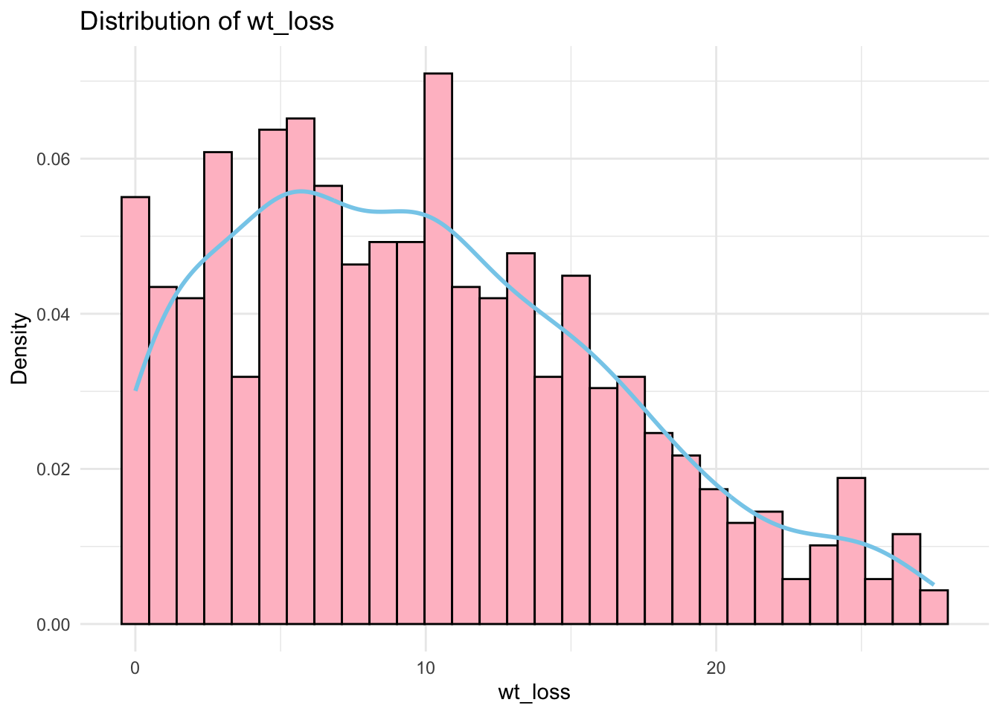

The following package(s) will be installed:
- rlang [1.1.5]
These packages will be installed into "~/Desktop/STAT master/MADA/yufeiwu-MADA-portfolio/renv/library/R-4.3/aarch64-apple-darwin20".
# Installing packages --------------------------------------------------------
- Installing rlang ... OK [linked from cache]
Successfully installed 1 package in 2.7 milliseconds.
install.packages("rlang", dependencies =TRUE)
The following package(s) will be installed:
- rlang [1.1.5]
These packages will be installed into "~/Desktop/STAT master/MADA/yufeiwu-MADA-portfolio/renv/library/R-4.3/aarch64-apple-darwin20".
# Installing packages --------------------------------------------------------
- Installing rlang ... OK [linked from cache]
Successfully installed 1 package in 2.5 milliseconds.
install.packages("gt", dependencies =TRUE)
The following package(s) will be installed:
- gt [0.11.1]
These packages will be installed into "~/Desktop/STAT master/MADA/yufeiwu-MADA-portfolio/renv/library/R-4.3/aarch64-apple-darwin20".
# Installing packages --------------------------------------------------------
- Installing gt ... OK [linked from cache]
Successfully installed 1 package in 3 milliseconds.
The following package(s) will be installed:
- gridExtra [2.3]
These packages will be installed into "~/Desktop/STAT master/MADA/yufeiwu-MADA-portfolio/renv/library/R-4.3/aarch64-apple-darwin20".
# Installing packages --------------------------------------------------------
- Installing gridExtra ... OK [linked from cache]
Successfully installed 1 package in 2.8 milliseconds.
library(gridExtra)install.packages("ggpubr")
The following package(s) will be installed:
- ggpubr [0.6.0]
These packages will be installed into "~/Desktop/STAT master/MADA/yufeiwu-MADA-portfolio/renv/library/R-4.3/aarch64-apple-darwin20".
# Installing packages --------------------------------------------------------
- Installing ggpubr ... OK [linked from cache]
Successfully installed 1 package in 3.9 milliseconds.
The following package(s) will be installed:
- cli [3.6.3]
These packages will be installed into "~/Desktop/STAT master/MADA/yufeiwu-MADA-portfolio/renv/library/R-4.3/aarch64-apple-darwin20".
# Installing packages --------------------------------------------------------
- Installing cli ... OK [linked from cache]
Successfully installed 1 package in 3.5 milliseconds.
library(cli)# Load dataiavdata <-read.csv(here("cdcdata-exercise", "influenza_data.csv"))# Get an overview of the datastr(iavdata) # Structure of the dataset
'data.frame': 728 obs. of 29 variables:
$ Ferret : chr "F1" "F2" "F3" "F4" ...
$ Virus : chr "A/Turkey/VA/4529/2002" "A/Turkey/VA/4529/2002" "A/Turkey/VA/4529/2002" "A/Turkey/VA/4529/2002" ...
$ inoc_dose : num 7 7 7 7 7 7 7 7 7 7 ...
$ units : chr "EID" "EID" "EID" "EID" ...
$ expt : chr "path" "path" "path" "DC" ...
$ lethal : chr "false" "false" "false" "false" ...
$ lethal_day : int 0 0 0 0 0 0 0 0 0 0 ...
$ NW_typical : chr "true" "true" "true" "true" ...
$ RD_trans : chr NA NA NA NA ...
$ HPAI : chr "false" "false" "false" "false" ...
$ HPAI_MBAA : chr "false" "false" "false" "false" ...
$ HA : chr "H7" "H7" "H7" "H7" ...
$ NA. : chr "N2" "N2" "N2" "N2" ...
$ Origin : chr "avian" "avian" "avian" "avian" ...
$ wt_loss : num 6.7 11.8 15.4 5.9 7.9 6.1 3.5 22.5 15 14.9 ...
$ wt_loss_day: int 7 4 6 11 5 9 11 7 7 8 ...
$ temp : num 0.5 0.9 2 1 1 0.5 0.5 1.1 1.1 1 ...
$ temp_day : int 4 7 8 9 3 3 7 7 7 1 ...
$ temp_5 : num 0.5 0.7 1.8 0.3 1 0.5 0.3 0.1 0.6 1 ...
$ temp_5_day : int 4 2 2 3 3 3 1 3 3 1 ...
$ d1_inoc : num 6.5 5.5 6.25 6.75 6.25 7.25 5.75 5.75 4.75 6.5 ...
$ d2_inoc : num NA NA NA NA NA NA NA NA NA NA ...
$ d3_inoc : num 4.5 6.5 5.5 6.75 6.5 6.75 5.75 5.5 3.75 5.25 ...
$ d4_inoc : num NA NA NA NA NA NA NA NA NA NA ...
$ d5_inoc : num 4.75 4.75 5.75 5.75 4.75 4.5 5.75 5.5 5.25 6.5 ...
$ d6_inoc : num NA NA NA NA NA NA NA NA NA NA ...
$ d7_inoc : num 1.75 1.5 1.5 3.25 1.5 1.5 1.5 2.25 1.5 3.25 ...
$ d8_inoc : num NA NA NA NA NA NA NA NA NA NA ...
$ d9_inoc : num 1.5 1.5 1.5 1.5 1.5 1.5 1.5 1.5 1.5 1.5 ...
summary(iavdata) # Summary statistics
Ferret Virus inoc_dose units
Length:728 Length:728 Min. :5.000 Length:728
Class :character Class :character 1st Qu.:6.000 Class :character
Mode :character Mode :character Median :6.000 Mode :character
Mean :6.089
3rd Qu.:6.000
Max. :7.000
expt lethal lethal_day NW_typical
Length:728 Length:728 Min. : 0.000 Length:728
Class :character Class :character 1st Qu.: 0.000 Class :character
Mode :character Mode :character Median : 0.000 Mode :character
Mean : 1.049
3rd Qu.: 0.000
Max. :13.000
RD_trans HPAI HPAI_MBAA HA
Length:728 Length:728 Length:728 Length:728
Class :character Class :character Class :character Class :character
Mode :character Mode :character Mode :character Mode :character
NA. Origin wt_loss wt_loss_day
Length:728 Length:728 Min. : 0.000 Min. : 0.000
Class :character Class :character 1st Qu.: 4.800 1st Qu.: 4.000
Mode :character Mode :character Median : 9.300 Median : 7.000
Mean : 9.914 Mean : 6.431
3rd Qu.:14.425 3rd Qu.: 9.000
Max. :27.500 Max. :14.000
temp temp_day temp_5 temp_5_day d1_inoc
Min. :0.000 Min. : 0.000 Min. :0.000 Min. :0.00 Min. :1.00
1st Qu.:1.000 1st Qu.: 1.000 1st Qu.:1.000 1st Qu.:1.00 1st Qu.:4.85
Median :1.500 Median : 2.000 Median :1.500 Median :2.00 Median :5.78
Mean :1.586 Mean : 3.082 Mean :1.501 Mean :2.04 Mean :5.81
3rd Qu.:2.200 3rd Qu.: 4.000 3rd Qu.:2.025 3rd Qu.:3.00 3rd Qu.:6.75
Max. :4.000 Max. :14.000 Max. :4.000 Max. :5.00 Max. :9.25
NA's :115
d2_inoc d3_inoc d4_inoc d5_inoc
Min. :3.500 Min. :1.980 Min. :1.980 Min. :1.500
1st Qu.:5.500 1st Qu.:4.500 1st Qu.:4.250 1st Qu.:4.470
Median :5.813 Median :5.340 Median :5.250 Median :5.100
Mean :5.931 Mean :5.296 Mean :5.008 Mean :5.048
3rd Qu.:6.500 3rd Qu.:6.250 3rd Qu.:5.750 3rd Qu.:5.750
Max. :8.750 Max. :8.750 Max. :7.500 Max. :9.500
NA's :607 NA's :115 NA's :613 NA's :121
d6_inoc d7_inoc d8_inoc d9_inoc
Min. :1.301 Min. :1.000 Min. :1.000 Min. :1.000
1st Qu.:3.250 1st Qu.:1.000 1st Qu.:1.500 1st Qu.:1.000
Median :4.500 Median :1.500 Median :1.500 Median :1.500
Mean :4.123 Mean :1.997 Mean :1.543 Mean :1.327
3rd Qu.:5.250 3rd Qu.:2.500 3rd Qu.:1.500 3rd Qu.:1.500
Max. :6.750 Max. :7.000 Max. :3.500 Max. :4.750
NA's :621 NA's :150 NA's :632 NA's :180
The variables d1_inoc, d2_inoc, …, d9_inoc have missing values, likely due to the every-other-day sampling schedule or the euthanasia of ferrets that reached humane endpoints in the study. However, I will not focus on these variables, as I find other variables more interesting for exploration. I choose the variables lethal, Origin, wt_loss, wt_loss_day, and temp to do exploration.
lethal: if the ferret survived the 14 day p.i. inoculation period (FALSE) or was humanely. euthanized between days 1-14 p.i. due to reaching experimental endpoints (TRUE).
Origin: Categorical column indicating the host origin of the inoculating virus.
wt_loss: Numerical column that specifies the maximum percentage weight loss.
wt_loss_day :Numerical column that indicates the day p.i. the maximum percentage weight loss reported in wt_loss was detected.
temp: Numerical column that specifies the maximum increase in degrees Celsius.
Explore the data
Explore the categorical variables
# Make table summarizing the Origin lethal rate# Encode lethal to be logicaliavdata2 <- iavdata2 %>%mutate(lethal =as.logical(lethal)) # Create a summary table with lethal rate (where lethal is TRUE)exploratory_table <- iavdata2 %>%group_by(Origin) %>%summarise(Total =n(),Lethal_True =sum(lethal, na.rm =TRUE), # Ensure TRUE values are countedLethal_Rate =round((Lethal_True / Total) *100, 2) # Calculate percentage ) %>%arrange(desc(Lethal_Rate)) # Sort by Lethal Rate# Display the tableexploratory_table %>%gt() %>%tab_header(title ="Lethal (TRUE) Rate by Origin" ) %>%cols_label(Origin ="Origin",Total ="Total Cases",Lethal_True ="Lethal (TRUE) Count",Lethal_Rate ="Lethal Rate (%)" )
Lethal (TRUE) Rate by Origin
Origin
Total Cases
Lethal (TRUE) Count
Lethal Rate (%)
avian
384
97
25.26
human
180
7
3.89
variant
146
4
2.74
canine
3
0
0.00
swine
15
0
0.00
# Make table summarizing the composition of the Originorigin_summary <- iavdata2 %>%group_by(Origin) %>%summarise(Count =n(), # Total observations per originPercentage =round((Count /nrow(iavdata2)) *100, 2) # Calculate percentage ) %>%arrange(desc(Count)) # Sort by highest count# Display the tableorigin_summary %>%gt() %>%tab_header(title ="Composition of Origin" ) %>%cols_label(Origin ="Origin",Count ="Count",Percentage ="Percentage (%)" )
Composition of Origin
Origin
Count
Percentage (%)
avian
384
52.75
human
180
24.73
variant
146
20.05
swine
15
2.06
canine
3
0.41
Explore continuous variables
# Plot the distribution and summarize mean and standard deviation of wt_loss, wt_loss_day, and temp# Define a function to plot and summarize a variableplot_and_summarize <-function(data, variable) {# Create histogram with density curve p <-ggplot(data, aes(x =!!sym(variable))) +geom_histogram(aes(y = ..density..), bins =30, fill ="pink", color ="black") +geom_density(color ="skyblue", size =1) +labs(title =paste("Distribution of", variable), x = variable, y ="Density") +theme_minimal()# Print the plotprint(p)# Calculate mean and standard deviation summary_stats <- data %>%summarise(Mean =mean(!!sym(variable), na.rm =TRUE),SD =sd(!!sym(variable), na.rm =TRUE) )return(summary_stats)}# Plot and summarize wt_losswt_loss_summary <-plot_and_summarize(iavdata2, "wt_loss")

print(wt_loss_summary)
Mean SD
1 9.914286 6.668187
# Plot and summarize wt_loss_daywt_loss_day_summary <-plot_and_summarize(iavdata2, "wt_loss_day")
print(wt_loss_day_summary)
Mean SD
1 6.431319 3.193995
# Plot and summarize temptemp_summary <-plot_and_summarize(iavdata2, "temp")
print(temp_summary)
Mean SD
1 1.585989 0.7760666
# Box plot of lethal vs. wt_lossggplot(iavdata2, aes(x =as.factor(lethal), y = wt_loss)) +geom_boxplot(fill ="skyblue", color ="black", outlier.color ="red", outlier.size =2) +labs(title ="Box Plot of Lethal vs. Maximum Percentage Weight Loss",x ="Lethal (0 = False, 1 = True)",y ="Weight Loss (wt_loss)" ) +theme_minimal()
# Box plot of lethal vs. wt_loss_dayggplot(iavdata2, aes(x =as.factor(lethal), y = wt_loss_day)) +geom_boxplot(fill ="skyblue", color ="black", outlier.color ="red", outlier.size =2) +labs(title ="Box Plot of Lethal vs. Day of Maximum Percentage Weight Loss",x ="Lethal (0 = False, 1 = True)",y ="Weight Loss Day (wt_loss_day)" ) +theme_minimal()
# Box plot of lethal vs. tempggplot(iavdata2, aes(x =as.factor(lethal), y = temp)) +geom_boxplot(fill ="skyblue", color ="black", outlier.color ="red", outlier.size =2) +labs(title ="Box Plot of Lethal vs. Maximum Increase in Degrees Celsius",x ="Lethal (0 = False, 1 = True)",y ="Temperature (temp)" ) +theme_minimal()
This section contributed by Muhammad Nasir
In this part, I would like to create a new dataset that similiar with the existing dataset. Let assume that the existing dataset is not possible to share publicly. Therefore, we want to create sythetic data to share wihch is similiar with the original dataset.
Summarise the data
Before stsrting to sythesize a new dataset from the existing dataset, I would like to check the summary of the data and explore the data more.
summary(iavdata2)
lethal Origin wt_loss wt_loss_day
Mode :logical Length:728 Min. : 0.000 Min. : 0.000
FALSE:620 Class :character 1st Qu.: 4.800 1st Qu.: 4.000
TRUE :108 Mode :character Median : 9.300 Median : 7.000
Mean : 9.914 Mean : 6.431
3rd Qu.:14.425 3rd Qu.: 9.000
Max. :27.500 Max. :14.000
temp
Min. :0.000
1st Qu.:1.000
Median :1.500
Mean :1.586
3rd Qu.:2.200
Max. :4.000
I want to create dataset based on the condition of existing dataset. I get help from AI to generate the dataset with the following prompt.
I have a dataset called iavdata2. It contains 728 observations and 5 variabels, the followings are the condition of my dataset: 1. lethal (Mode: Logical with 620 Falses and 108 True) 2. origin (with Lenght 728, class: Character, and mode: Character) 3. wt_loss (min. 0.000, 1st Qu.: 4.800, median : 9.300, mean : 9.914, 3rd Qu. : 14.425, and Max. : 27.500, sd: 6.6681872) 4. wt_loss_day with (min. 0.000, 1st Qu. 4.000, Median: 7.000), Mean: 6.431, 3rd Qu. 9.000, max. 14.000, sd: 3.1939950) 5. temp (min. : 0.000, 1st Qu. : 1.000, Median: 1.500, Mean : 1.586, 3rd Qu. : 2.200, max.: 4.000, sd: 0.7760666) 6. Composition of origin: Avian 384 (52.75%), human 180 (24.73%), variant 146 (20.05%), swine 15 (2.06%), canine 3 (0.41%) 7. lethal condition: False ( avian 287, canine 3, human 173, swine 15, variant 142), and true ( avian 97, canine 0, human 7, swine 0, variant 4)
Please help me create a new sythetic dataset which is similiar with my existing dataset, based on information provided. Generate code in R
# Set the number of observations for the synthetic datasetn <-728# 1. Generate the 'lethal' variable (Logical: 620 Falses and 108 Trues)lethal <-sample(c(FALSE, TRUE), size = n, replace =TRUE, prob =c(620/728, 108/728))# 2. Generate the 'origin' variable (Character with given proportions)origin <-sample(c("Avian", "Human", "Variant", "Swine", "Canine"), size = n, replace =TRUE, prob =c(384/728, 180/728, 146/728, 15/728, 3/728))# 3. Generate the 'wt_loss' variable (Continuous variable with mean 9.914 and sd 6.668)wt_loss <-rnorm(n, mean =9.914, sd =6.668)# 4. Generate the 'wt_loss_day' variable (Continuous variable with mean 6.431 and sd 3.194)wt_loss_day <-rnorm(n, mean =6.431, sd =3.194)# 5. Generate the 'temp' variable (Continuous variable with mean 1.586 and sd 0.776)temp <-rnorm(n, mean =1.586, sd =0.776)# Combine all variables into a data framesyn_iavdata <-data.frame(lethal = lethal,origin = origin,wt_loss = wt_loss,wt_loss_day = wt_loss_day,temp = temp)
# Display a summary of the synthetic datasetsummary(syn_iavdata)
lethal origin wt_loss wt_loss_day
Mode :logical Length:728 Min. :-10.489 Min. :-3.744
FALSE:626 Class :character 1st Qu.: 5.075 1st Qu.: 4.690
TRUE :102 Mode :character Median : 9.486 Median : 6.670
Mean : 9.518 Mean : 6.740
3rd Qu.: 14.140 3rd Qu.: 8.872
Max. : 29.714 Max. :17.105
temp
Min. :-0.7513
1st Qu.: 1.0445
Median : 1.5478
Mean : 1.5597
3rd Qu.: 2.0849
Max. : 4.2360
Data exploration and compare between original dan sythetic data
Explore the data
Explore the categorical variables
# Make table summarizing the Origin lethal rate# Encode lethal to be logicalsyn_iavdata <- syn_iavdata %>%mutate(lethal =as.logical(lethal)) # Create a summary table with lethal rate (where lethal is TRUE)exploratory_table <- syn_iavdata %>%group_by(origin) %>%summarise(Total =n(),Lethal_True =sum(lethal, na.rm =TRUE), # Ensure TRUE values are countedLethal_Rate =round((Lethal_True / Total) *100, 2) # Calculate percentage ) %>%arrange(desc(Lethal_Rate)) # Sort by Lethal Rate# Display the table# syn_iavdataDisplay the tableexploratory_table %>%gt() %>%tab_header(title ="Lethal (TRUE) Rate by Origin" ) %>%cols_label(origin ="Origin",Total ="Total Cases",Lethal_True ="Lethal (TRUE) Count",Lethal_Rate ="Lethal Rate (%)" )
Lethal (TRUE) Rate by Origin
Origin
Total Cases
Lethal (TRUE) Count
Lethal Rate (%)
Avian
407
60
14.74
Variant
139
20
14.39
Human
168
22
13.10
Canine
2
0
0.00
Swine
12
0
0.00
# Make table summarizing the composition of the Originorigin_summary <- syn_iavdata %>%group_by(origin) %>%summarise(Count =n(), # Total observations per originPercentage =round((Count /nrow(iavdata2)) *100, 2) # Calculate percentage ) %>%arrange(desc(Count)) # Sort by highest count# Display the tableorigin_summary %>%gt() %>%tab_header(title ="Composition of Origin" ) %>%cols_label(origin ="Origin",Count ="Count",Percentage ="Percentage (%)" )
Composition of Origin
Origin
Count
Percentage (%)
Avian
407
55.91
Human
168
23.08
Variant
139
19.09
Swine
12
1.65
Canine
2
0.27
Explore the numeric variables
I want to explore both dataset by comparing both datasets
# Box plot of lethal vs. wt_loss_dayplot1 <-ggplot(iavdata2, aes(x =as.factor(lethal), y = wt_loss_day)) +geom_boxplot(fill ="skyblue", color ="black", outlier.color ="red", outlier.size =2) +labs(title ="Lethal vs. Day of Weight Loss (original data)",x ="Lethal (0 = False, 1 = True)",y ="Weight Loss Day (wt_loss_day)" ) +theme_minimal()plot2 <-ggplot(syn_iavdata, aes(x =as.factor(lethal), y = wt_loss_day)) +geom_boxplot(fill ="skyblue", color ="black", outlier.color ="red", outlier.size =2) +labs(title ="Lethal vs. Day of Weight Loss (Sythetic Data) ",x ="Lethal (0 = False, 1 = True)",y ="Weight Loss Day (wt_loss_day)" ) +theme_minimal()lethal_day <-grid.arrange(plot1, plot2, ncol =2) # to put those plots side by side
his_day_ori <-ggplot(iavdata2, aes(x = wt_loss)) +geom_histogram(aes(y = ..density..), bins =30, fill ="purple", color ="black", alpha =0.7) +# Density-based histogramgeom_density(color ="blue", size =1) +# Overlay density curvelabs(title ="Distribution of Day Weight loss (original)", x ="wt_day_loss", y ="Density") +theme_minimal()his_day_syn <-ggplot(syn_iavdata, aes(x = wt_loss)) +geom_histogram(aes(y = ..density..), bins =30, fill ="lightblue", color ="black", alpha =0.7) +# Density-based histogramgeom_density(color ="blue", size =1) +# Overlay density curvelabs(title ="Distribution of Day Weight loss (synthetic)", x ="wt_day_loss", y ="Density") +theme_minimal()his_wt_day_loss <-grid.arrange(his_day_ori, his_day_syn, ncol =2)